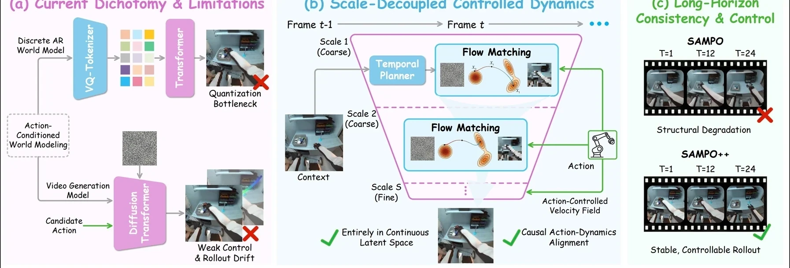
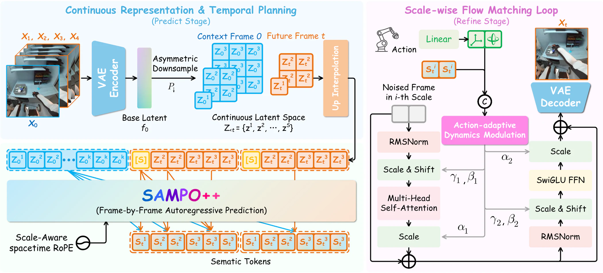
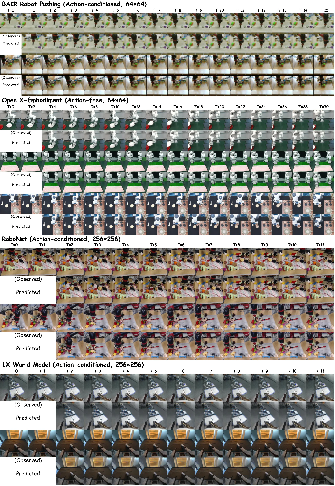

Abstract
Embodied world models must jointly satisfy two competing demands: maintaining causally coherent temporal dynamics and synthesizing perceptually rich future observations. Existing approaches address these demands in isolation — discrete autoregressive models reason well over time but suffer from quantization artifacts, while continuous generative models produce high-fidelity frames but cannot autoregressively condition on arbitrarily long histories. We present SAMPO++, an embodied world model that resolves this dichotomy through a unified Predict-then-Refine paradigm operating entirely in a continuous latent space. A temporal autoregressive transformer first establishes structural priors for future states; a scale-wise flow matching generator then refines these priors from noise into high-fidelity visual predictions. Action signals are injected at every scale through our Action-adaptive Dynamics Modulation (ADM), and long-horizon coherence is preserved by Scale-Aware RoPE (SA-RoPE) together with flow trajectory rectification. SAMPO++ extends its NeurIPS 2025 predecessor with a continuous latent space, scale-wise refinement, and improved action conditioning, yielding state-of-the-art performance on robotic video prediction (BAIR, RoboNet), autonomous driving (Cityscapes, OpenDV-YouTube), and model-based control (VP2, Meta-World).
Framework Overview
SAMPO++ resolves the trade-off between discrete autoregressive reasoning and continuous synthesis through a unified Predict-then-Refine world-modeling paradigm.

Figure 1. Conceptual comparison and framework overview.
Left: current world models dichotomize into discrete autoregressive models (quantization artifacts) and continuous fixed-length generators (limited temporal horizon). Right: SAMPO++ unifies both via a Predict-then-Refine paradigm on a continuous latent manifold, with Action-adaptive Dynamics Modulation (ADM) for frequency-aware action control.
Method
A temporal autoregressive planner and a scale-wise flow renderer operate in concert on a shared continuous latent space.
SAMPO++ encodes observations into a multi-scale continuous latent representation using an asymmetric tokenizer. A temporal autoregressive transformer attends causally across time to predict coarse future structure. A scale-wise flow matching generator then iteratively refines each latent scale from Gaussian noise to a high-fidelity future state, conditioned on the autoregressive prior.
ADM injects action embeddings through scale-aware feature statistics at every refinement level. SA-RoPE extends rotary positional embeddings with explicit scale awareness, preventing positional aliasing over long horizons. Flow trajectory rectification straightens denoising paths, reducing inference steps without quality loss.
Continuous latent space
Avoids discrete quantization artifacts and resolution bottlenecks of VQ-based world models.
Temporal autoregression
Causally builds coarse future structure from the full observation history.
Scale-wise flow matching
Refines future latent scales progressively for high perceptual fidelity.
Action-adaptive dynamics (ADM)
Scale-aware action conditioning improves controllability and temporal stability.

Figure 2. SAMPO++ model overview.
The temporal autoregressive planner conditions on past latents and actions to predict structural future priors; the scale-wise flow renderer denoises each latent scale conditioned on the prior and the ADM-injected action signal.
Quantitative Results
SAMPO++ achieves state-of-the-art results across robotic video prediction, autonomous driving prediction, and model-based visual planning.
BAIR FVD, 2→28 frames52.5
BAIR FVD, 2→48 frames64.8
RoboNet FVD, 64×6449.8
BAIR action-conditioned FVD47.6
VP2 average success rate75.4%

Figure 3. Quantitative and ablation results.
Ablations isolate the contribution of continuous latents, ADM, SA-RoPE, and flow trajectory rectification. Each component provides complementary gains in FVD and downstream task success.
Qualitative Results
Qualitative comparisons across robotic manipulation, autonomous driving, visual planning, and Meta-World control.
VLA Rollout Videos
SAMPO++ serves as a learned simulator for VLA action prediction. Each pair shows the real robot rollout alongside the corresponding SAMPO++-predicted video trajectory.
Citation
If you find SAMPO++ useful in your research, please consider citing our work.
@article{wang2026sampopp,
title = {SAMPO++: Unified Temporal Autoregression and Scale-Wise Flow Matching
for Embodied World Models},
author = {Wang, Sen and Zhou, Sanping and Dong, Huaiyi and Xia, Kun and
Hua, Gang and Wang, Le},
year = {2026}
}
You may also cite the conference version: SAMPO (NeurIPS 2025).